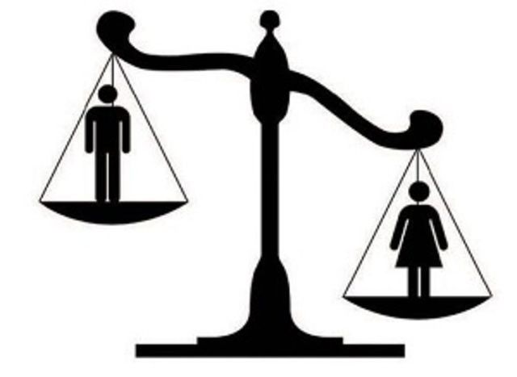

| NOMBRE | UBICACION | SERVICIOS( ESPECIALISTAS) | COSTOS | SECTOR SOCIAL |
|---|---|---|---|---|
| ARTURO TELLEZ LÓPEZ | MANZANA 2DA SANTA CRUS TEPEXPAN | MEDICO GENERAL GINECOLOGÍA Y OBSTETRICIA, PEDIATRÍA MEDICINA INTERNA Y GEREATRÍA, TRAUMATOLOGÍA Y ORTOPEDÍA, UROLOGÍA, CIRUGÍA GENERAL, ANESTESIOLOGÍA, CIRUGÍA PLASTICA. | CONSULTA GENERAL-$250 CONSULTA DE URGENCIA-$450 CONSULTA ESPECIALISTA-$750 CONSULTA CON RASTREO DE ULTRASONIDO-$856, COLPOSCOPIA-$970 PAPANICOLAU-$970 COLPO Y PAP-$1070 |
|
| NUESTRA SEÑORA DE GUADALUPE | CARRETERA IXTLAHUACA-JIQUIPILCO, MANZANA 3RA A 100MTS DEL CECYTEM | GINECOLOGÍA TRAUMATOLOGÍA CIRUGÍA GENERAL MEDICOS GENERALES NUTRICIÓN | CONSULTA GENERAL-$300 ESPECIALISTAS: GINECOLOGÍA-$650 TRAUMATOLOGÍA-$600 |
|
| FARMACIAS SIMILARES | CARRETERA IXTLAHUACA-JIQUIPILCO MANZANA 3RA A 50MTS DEL CECYTEM | MEDICO GENERAL | CONSULTA GENERAL-$60 CONSULTA DIAS DOMINGOS Y DIAS FESTIVOS-$65 |
|
| SANATORIO SANTA ISABEL | MANZANA 1RA JIQUIPILCO MEXICO | MEDICINA GENERAL PEDIATRÍA GINECOLOGÍA Y OBSTETRICIA CIRUGÍA TRAUMATOLOGÍA MEDICINA ESTÉTICA ODONTOLOGÍA PSICOLOGÍA | CONSULTA GENERAL-$200 ESPECIALIDAD-$500 A $800 |
|
| IMSS BIENESTAR-HERMENEGILDO GALEANA | JIQUIPILCO MEXICO-MOXTEJE | SERVICIOS GENERALES PARTOS CIRUGÍAS MENORES VACUNAS | DEPENDE DEL ESTADO SOCIOECONOMICO DE LA PERSONA | A TODA LA COMUNIDAD YA QUE ES EL HOSPITAL GENERAL DE JIQUIPILCO |
La desigualdad en el acceso a los servicios de salud es un problema que impacta tanto a nivel individual como comunitario, influyendo directamente en la calidad y esperanza de vida de las personas. El acceso a la atención médica depende de factores como la ubicación geográfica, el nivel socioeconómico, el género, la educación y las políticas públicas, lo que genera una distribución desigual de los recursos sanitarios.

Para una persona, la falta de acceso a servicios de salud puede significar diagnósticos tardíos, tratamientos insuficientes o la imposibilidad de atender enfermedades prevenibles. Esto no solo afecta la salud física y mental, sino que también repercute en la estabilidad económica y emocional del individuo y su familia. Una persona enferma sin acceso a tratamiento puede perder oportunidades laborales y experimentar un deterioro en su calidad de vida.